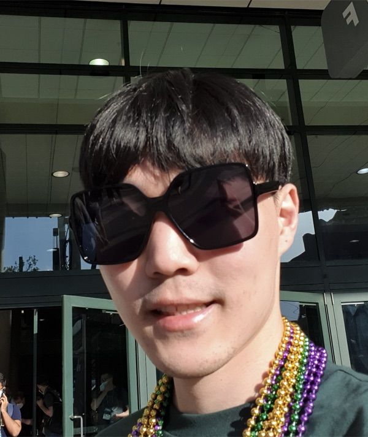

Jinsoo Park
I am an integrated M.S./Ph.D. student at CVLab, Graduate School of AI, POSTECH, advised by Prof. Jeany Son. My research interest lies in 3D reconstruction, and I am currently working on improving the efficiency of 3D reconstruction with a single feed-forward network (FFN).

News
- 2026-06 Two papers accepted to ECCV 2026. 🎉
- 2025-09 Joined POSTECH CVLab (Advisor: Jeany Son).
Education
-
Pohang University of Science and Technology (POSTECH) 2025.09 – PresentIntegrated M.S./Ph.D., Graduate School of AI · Advisor: Jeany Son
-
Gwangju Institute of Science and Technology (GIST) 2021.09 – 2025.08Integrated M.S./Ph.D., AI Graduate School · Advisor: Jeany Son
Transferred to POSTECH (no degree conferred) -
Hongik University 2014.03 – 2021.02B.S. in Mechanical Engineering
Research
Anti-Prompt: Image Protection against Text-Guided Image-to-Video Generation
ECCV 2026, Malmö, Sweden